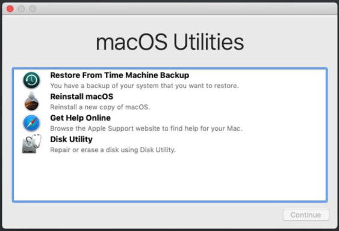
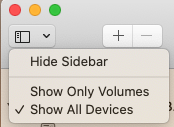
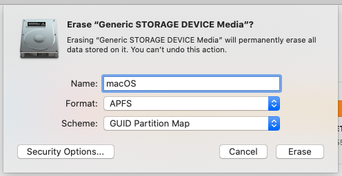
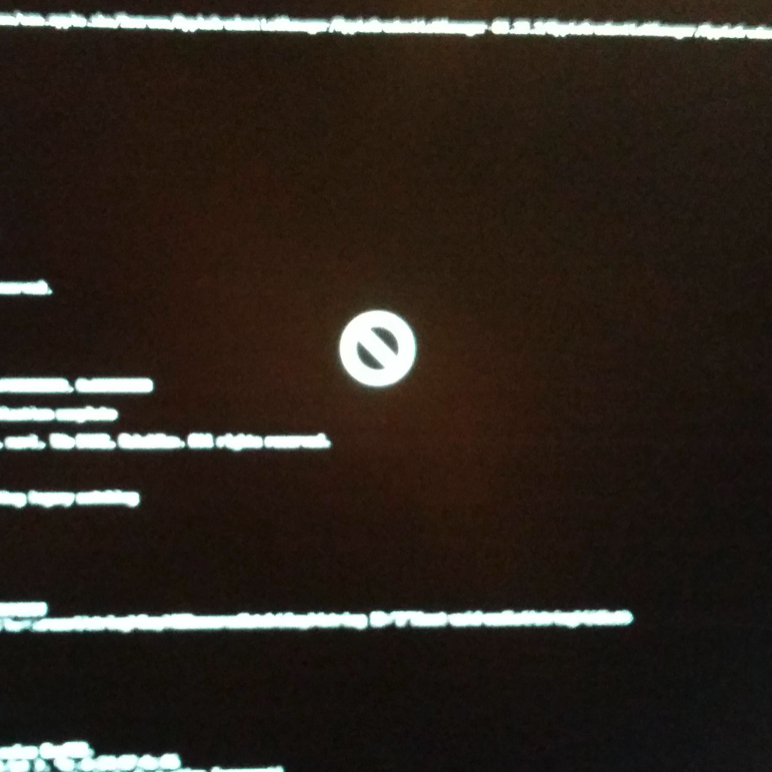

Installing the Operating System
Now that you have your installation media created, boot your USB stick and select the macOS installer. Provided everything goes as planned, you should be presented with a tools window that looks similar to the image below.

Prepare Your HDD/SDD for macOS
Before installing macOS, you need to create an APFS volume on your destination disk. To do this, we'll use Disk Utility. Click it in the Utilities menu, and select Continue. Once Disk Utility opens, we'll need to show all devices like we did when preparing the USB media.
- Plug the USB stick into your computer, and open Disk Utility.
- In Disk Utility, select View and then Show All Devices.

- Select the media you will be installing macOS onto, and then Erase.
- Erase the drive using a GUID partition map, and the APFS filesystem.

Once the drive is formatted, close Disk Utility which will return you to the macOS Utilities menu.
Installing macOS
Now that your media has been formatted, it's time to install macOS! Select Reinstall macOS from the menu and click Continue. Select your newly formatted APFS volume, and install macOS. There are multiple phases to macOS installation, don't be surprised if there is a reboot during the install process. If everything goes as planned, it should boot to each phase automatically. Once the installation is complete, you should be presented with a welcome screen. Congratulations, you've installed! The fun is only just begining however as we still need to configure macOS to work with all of your hardware.
Prohibited Sign & Broken Text
If while booting macOS you come across a boot failure with a prohibited symbol and broken text, that means macOS could not find the root device while booting. It may look similar to the image below.

This is a very common problem, and it's usually related to the USB device or the USB port that the device is plugged into. The first thing to try is moving the USB from one port to another, repeating until you're back where you started. You don't need to reboot, just move the stick and wait a few seconds to see if macOS finds it and progresses. If not, there are a few things you can do to try and fix it.
You can check again USB pre-setup to see if you properly made your USBInjectAll setup.